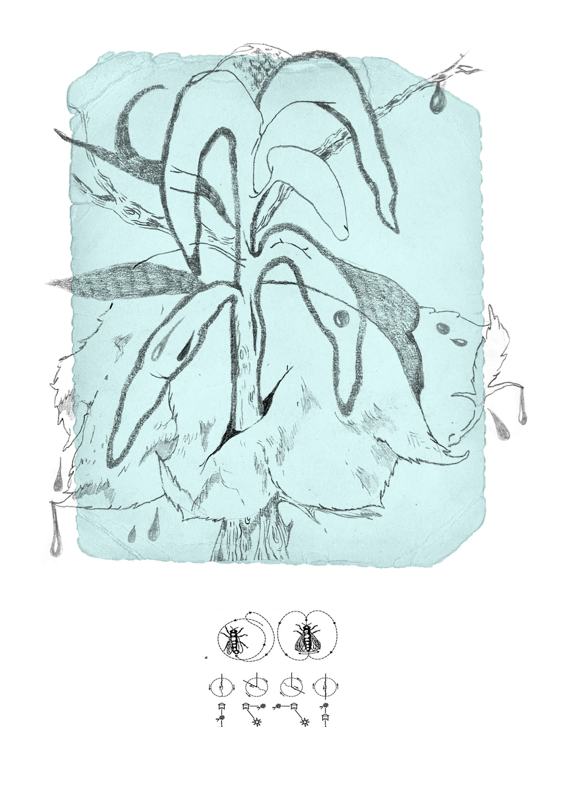
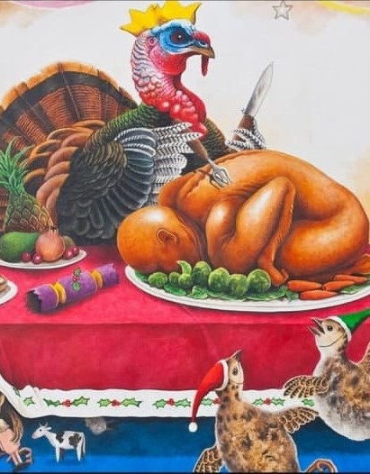
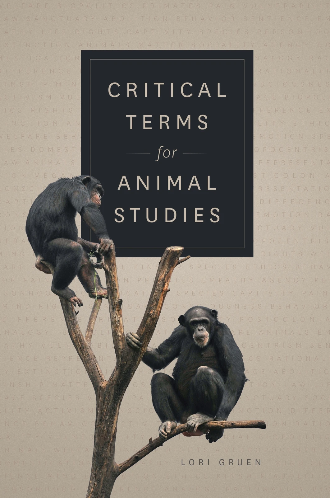

Деррида и «Половая политика мяса»
Перевод обсуждения исследовательницы веган-феминизма Кэрол Дж. Адамс и философа исследований животных Мэтью Каларко о карнофаллогоцентризме Деррида и книги Адамс «Половая политика мяса»
Reverse Speciesism, Subjectivity, and Becoming the Other in Carol Emshwiller’s Novel The Mount
Моя статья для ноябрьского номера научного журнала "Journal for Critical Animal Studies"

Субъективность животных
Статья о философских размышлениях и концептах субъективности людей и животных, дуалистическом картезианском субъекте, «отсутствующих референтах» и карнофаллогоцентризме

Спесишизм и права животных
О спесишизме как об одной из самых прочных форм дискриминации и угнетения нечеловеческих животных, а также о различных подходах к правам всех животных
Животные, аномалии и неорганические Другие
Философиня-постгуманистка Рози Брайдотти размышляет о нечеловеческих философиях, миноритарных субъектах, животных как вечных Других и этических концепциях становления животным

Критические термины для исследований животных
Исследовательница Лори Груэн об истории, интерсекциональности и активизме исследований животных
Сопротивление спесишизму и расширение сообщества равных
Исследователь поведения и сознания животных, а также веган-активист Марк Бекофф размышляет о необходимости сопротивления спесишизму и отказа от жестоких экспериментов над любыми животными